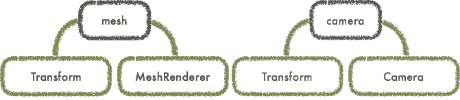
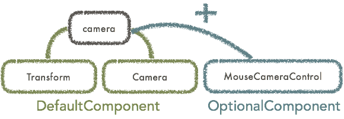
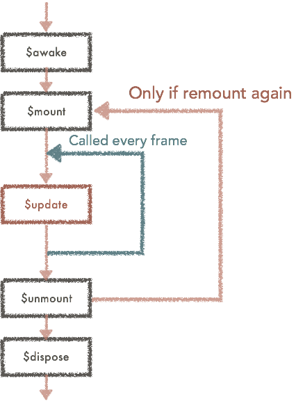

Getting started
What’s Grimoire.js?
Grimoire.js is WebGL framework for Web development in short.
Currently, WebGL designing require highly developed graphics knowledge and is very difficult to co-work in previous Web development flow.
Grimoire.js is the framework that construct a bridge between Web engineer and CG engineer.
Previous libraries to use WebGL are mostly focusing on game development not Web applications.
Most of them are just ported APIs grown in game development field and Web designers need to adopt them to follow that culture. And that culture is vastly differ from common web development culture.
Our mission is Making WebGL being a brush of Web development. We are making WebGL easier like the other brushes such as images or videos. We provide strong visualization possibility not only for CG engineers but also for Web engineers.
What Grimoire.js can do?
Several samples are available using Grimoire.js.
Getting started
You need to make simple HTML to use Grimoire.js. Then, you can link Grimoire.js with the following tag.
1 | <script src="https://unpkg.com/grimoirejs-preset-basic/register/grimoire-preset-basic.js"></script> |
This script is not
pureGrimoire.js. This file includes several plugins you might need to use.
If you need minified scirpt file or you want to use npm, please check Installation page.
Markup for Grimoire.js
Grimoire.js use simple markup file to configure initial state of the canvas. This markup language is called as GOML.
Let’s write the code below in your html.
1 | <body> |
Grimoire.js try to read <script> element specified type='text/goml' and insert <canvas> element at the same position.
Let’s modify position attribute on <mesh>. You might realized you could moved the mesh.
All Grimoire.js objects can be operated just like HTML elements.
Loading GOML files
In the same way as loading javascript with
<script>element, you can specifysrc='URL of GOML file'to load GOML file from another file.
In this tutorial, we use embedded GOML file, but we strongly recommend not to do so.
You can use multiple canvases with 2 goml codes in same way.
Grimoire.js inspector
You can use chrome extension of Grimoire.js Devtool for making easier to use Grimoire.js.
This extension would be helpful during your training of Grimoire.js.
You can find more details and download from here

Mutation with Javascript API
1 | <script type="text/goml" id="canvas1"> |
Let’s prepare GOML code like above and execute a javascript below.
1 | gr(function(){ |
Then, you can see that the color of a mesh in the one of the canvas are changed after 1 secound.
If you have used jQuery ever, you would notice that this API is very similar to jQuery API.
Waiting for initialized timing
When you pass a function to
gras an argument, the function would be called after initializing grimoire.
Querying objects
When you pass a string which is query string for the
<script>element togras an argument, the returned object is the interface to manipulate nodes in releated canvas.
And you can query in the goml same way. In the example above, the queried objects are whole mesh included in the script quried with#canvas1.
Node, Component system
Acutually, the most important aspect of grimoire is not the feature we can write in almost same way as Web development.
Even we develop good abstraction for WebGL to use in same way as web development, WebGL has tons of possibility to visualize. It is impossible that we prepare all tags for every web engineers.
However, component system of grimoire gives us good solution.
Let’s see the GOML code below. Grimoire.js treat tags as nodes constructing tree structure.
But, the syntax <camera.components> is not ordinary tag but the syntax to append a component to <camera> tag.
The appended component <MouseCameraControl> is the component to operate positions and rotation with mouse operation.
1 | <script type="text/goml" id="canvas1"> |
In grimoire, nodes are including several modules called as component. In other words, nodes are just a container containing some components.

For example, <mesh> tag contains Transform component managing positions or rotations and MeshRenderer component managing rendering meshes by default.
As another example, <camera> tag contains Transform component and Camera component managing camera feature to project scene.

Node names means what is default components are bound and what is the default values for the attributes.
By adding some components to node, you can append a behaviour to the object.
Creating component
You can create component also.
Let’s create Rotate component to rotate a mesh.
1 | gr.registerComponent("Rotate",{ |
You can register component with gr.registerComponent. We don’t touch with component system in deeply here, but you can declare parameters which this component can receive.
These parameters are called attribute. In this example, the attribute speed is number type and default value is 1.
After loading the javascript, you need to inject GOML file to use that.
Load javascript file to declare components
You can simply link script tag with the code below.
Make sure you need to load script tag after grimoire.js loaded.
2
<script src="./index.js"></script>
1 | <script type="text/goml" id="canvas1"> |
This figure describes lifecycle of a component. You don’t need to understand now correctly, but this figure would be helpful in future.

The functions begins with $ are called message handler, and these are called in specific timings in component lifecycle.
Define node
If you need a lot of rotated mesh, the examples are inconvenient.
You can declare new node rotated-mesh which is originally mesh tag and just attached with Rotate component.1
gr.registerNode("rotated-mesh",["Rotate"],{},"mesh");
1 | <script type="text/goml" id="canvas1"> |
These examples are only describes core features of grimoire in short. All components or nodes implemented in default are made with same way. There are no exception.
Whats next?
You might have understood basic concept of Grimoire.
Grimoire provides some API like jQuery for Web engineers to use WebGL stuff under almost same way they have used in web development.
And, Grimoire also provides API like Unity for 3D engineers to make components that enables us to collaborate with the other web engineers easily without considering what kind of comprehensive API should be provided to Web engineers.
Grimoire connect each side of engineers by providing appropriate APIs for each engineers.
Let’s begin to learn Grimoire more with tutorial.